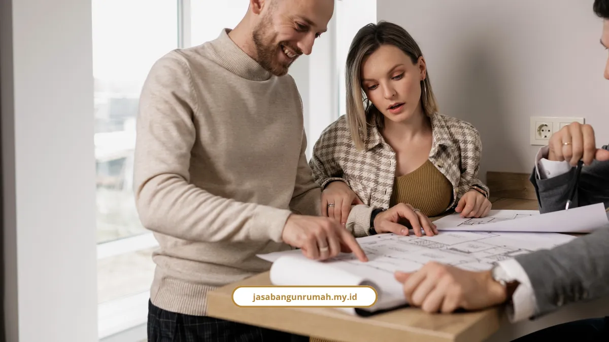

Daftar Isi
Jasa kontraktor bangunan Melayani Makassar menangani ruko, rumah, dan gedung komersial dengan RAB transparan. Ruko 2 sampai 3 lantai umumnya rampung 4 sampai 6 bulan.
Di bawah ini kami rangkum kisaran biaya per meter, alur kerja, jadwal, sampai urusan PBG, lengkap dengan angkanya. Anda juga bisa membaca artikel blog kami lainnya untuk informasi seputar konstruksi, atau melihat daftar lengkap layanan jasa kontraktor bangunan yang kami tawarkan.
Berapa Biaya Bangun per Meter?
Biaya bangun berkisar Rp3.000.000 hingga Rp10.000.000 per m², tergantung tipe dan spesifikasi material. Kisaran ini jadi patokan awal sebelum RAB rinci disusun.
- Sederhana: sekitar Rp3 juta per m²
- Menengah: sekitar Rp4 juta per m²
- Modern: sekitar Rp5 juta per m²
- Mewah: sekitar Rp8 juta per m²
Contoh hitungannya: rumah 2 lantai seluas 120 m² dengan estimasi Rp5,5 juta per m² membutuhkan sekitar Rp660.000.000.
Jujur saja, kisaran Rp3 juta sampai Rp10 juta per m² bukan harga mati. Angka pasti baru keluar setelah gambar kerja dan spesifikasi material disepakati. Porsi jasa kontraktor umumnya 10% sampai 20% dari total biaya pembangunan.
Untuk ruko, hitungannya punya lapisan sendiri. Simulasi kelas standar sampai premium kami tulis di rincian biaya kontraktor ruko per meter.
Apa Saja Layanan yang Kami Kerjakan?
Kami mengerjakan rumah, bangunan komersial, arsitektur dan interior, plus layanan pendukung. Jasabangunrumah.my.id berdiri sejak 2010 dan Melayani Makassar beserta wilayah sekitarnya, seperti Gowa dan Maros.
Rekam jejak yang sudah tercatat:
- Pengalaman 15+ tahun di bidang design and build
- 250+ proyek selesai
- 40+ tim profesional
- 98% tingkat kepuasan klien
Arsitek dan insinyur sipil yang bekerja di setiap proyek memiliki sertifikasi resmi.
Cakupan layanannya:
- Kontraktor rumah: hunian baru atau renovasi total dan parsial, dari minimalis, tropis modern, klasik, sampai rumah mewah 1 sampai 3 lantai
- Kontraktor bangunan dan komersial: ruko, gedung perkantoran, toko ritel, fasilitas komersial, dan bangunan industri
- Arsitek dan desain interior: konsep skematik, visualisasi 3D, Gambar Kerja Detail (DED), dan interior fungsional
- Layanan pendukung: konsultasi teknis awal gratis, pengawasan konstruksi independen, audit dan asesmen struktur, serta pendampingan perizinan
Khusus ruko, fasad dan pembagian ruang menentukan citra usaha. Pilihan gaya dan tata letaknya kami bahas di panduan desain ruko minimalis dua lantai yang hemat lahan.
Berapa Lama Pengerjaannya?
Alur kerja terpadu kami terdiri dari 4 tahap, dan ruko 2 sampai 3 lantai umumnya butuh 4 sampai 6 bulan. Gedung perkantoran bertingkat berkisar 12 sampai 24 bulan.

Empat tahap pembangunannya:
- Konsultasi: diskusi kebutuhan, lokasi, dan anggaran secara gratis
- Desain dan RAB: gambar teknis arsitektur dan rincian anggaran biaya yang jelas
- Konstruksi: pelaksanaan fisik dengan pengawasan mutu harian dan laporan progres berkala
- Serah terima: inspeksi akhir bersama klien, penyerahan dokumen as-built, dan pemberian garansi
Estimasi durasi pekerjaan lain:
- Renovasi ringan (finishing dan pengecatan): sekitar 1 sampai 2 minggu
- Renovasi besar atau perubahan struktur: 1 sampai 3 bulan
- Proses desain interior: 2 sampai 4 minggu
Semua angka di atas estimasi umum, bukan janji yang sama untuk setiap proyek.
Bagaimana Skema Pembayaran dan Kontraknya?
Pembayaran dilakukan bertahap (termin) sesuai persentase progres pekerjaan yang disepakati bersama dalam kontrak. Klien tidak harus membayar seluruh biaya di awal.
Dasar hukumnya jelas. UU No. 2 Tahun 2017 tentang Jasa Konstruksi dan Pasal 1338 KUHPerdata mewajibkan setiap ikatan kerja konstruksi dituangkan dalam Kontrak Kerja Konstruksi tertulis yang dijalankan dengan itikad baik.
Dokumen kontraknya tersusun berjenjang:
- Surat Perjanjian
- Syarat-Syarat Umum Kontrak (SSUK)
- Syarat-Syarat Khusus Kontrak (SSKK)
- Gambar Kerja Detail (DED)
Ahli hukum kontrak konstruksi dari lingkungan Kementerian PUPR menilai hierarki dokumen yang jelas sangat krusial. Fungsinya mencegah sengketa, perubahan biaya yang liar, dan keterlambatan proyek.
Apa Risiko Membangun Tanpa Perencanaan Matang?
Risiko utamanya tiga: proyek mangkrak, biaya membengkak, dan kualitas buruk. Material yang tidak sesuai janji juga selalu masuk daftar kekhawatiran pemilik bangunan. Ahli teknik sipil dan spesialis struktur menekankan pendekatan berbasis engineering, bukan perkiraan di lapangan.
Tenaga ahli berpendidikan S1 sampai S2 Teknik Sipil mengutamakan perencanaan mutu beton K-225 hingga K-500+, perhitungan mix design yang optimal, dan pengendalian kualitas berbasis laboratorium.
Jaminan yang kami pegang untuk setiap proyek:

- Garansi struktur bangunan
- Komitmen pengerjaan tepat waktu
- RAB transparan tanpa biaya tersembunyi
- Pengawasan mutu harian dan laporan progres berkala
Area depan ruko juga urusan struktur, bukan sekadar parkir asal muat. Datanya ada di analisis struktur parkir depan ruko, termasuk angka pelanggaran bahu jalan.
Siapa yang Bebas Retribusi PBG di Kota Makassar?
Masyarakat Berpenghasilan Rendah (MBR) dibebaskan dari Retribusi PBG untuk rumah tinggal layak huni. Regulasi khusus ini berlaku di Kota Makassar.
Kriteria penghasilannya:
- Maksimal Rp7.000.000 per bulan untuk yang belum kawin
- Maksimal Rp8.000.000 per bulan untuk yang sudah kawin
Tim kami membantu menyiapkan dokumen teknis untuk pengajuan PBG. Aturan pembebasan ini menyebut rumah tinggal layak huni, jadi pemilik ruko usaha perlu memastikan kategori bangunannya lebih dulu.
Apa Kata Klien Tentang Hasil Kerja Kami?
Klien rumah, ruko, dan kantor memberi penilaian yang konsisten: rapi, komunikatif, dan sesuai arahan. Berikut ulasan mereka.
- Budi Santoso (klien rumah tinggal): proses pembangunan rumahnya berjalan sangat rapi, kabar perkembangan proyek selalu diberikan, dan hasilnya "jauh melebihi ekspektasi kami"
- Andi (klien rumah): "Hasil renovasi rumah sangat rapi. Timnya komunikatif dan pengerjaan sesuai arahan."
- Hendra (klien ruko di Panakkukang): "Ruko kami berubah total. Fasad lebih modern dan interior lebih menarik untuk pelanggan."
- Rina (klien perkantoran di Tamalanrea): "Pekerjaan renovasi kantor selesai dengan baik. Desainnya terlihat profesional."
Ulasan tetaplah ulasan. Angka 98% kepuasan klien dan 250+ proyek selesai jadi pembanding yang lebih terukur.
Jasa kontraktor bangunan Melayani Makassar dari kami mencakup rumah, ruko, dan gedung komersial, dengan biaya Rp3 juta hingga Rp10 juta per m², pembayaran termin, dan garansi struktur. Ruko 2 sampai 3 lantai umumnya selesai dalam 4 sampai 6 bulan.
Konsultasi awal gratis, dan RAB kustom disusun setelah kebutuhan, lokasi, dan anggaran jelas. Kami Melayani Makassar, Gowa, dan Maros. Pilih layanan yang sesuai, lalu pesan konsultasi lewat WhatsApp:
- Jasa kontraktor bangunan untuk ruko, kantor, dan gedung komersial
- Jasa kontraktor rumah untuk hunian baru
- Jasa renovasi bangunan gedung untuk peremajaan bangunan lama
- Jasa arsitek dan jasa desain interior untuk perancangan dan layanan lainnya